00读前一分钟 · 全文脉络（完形先读首句，再看结构）
完形的首句从不设空。本篇首句是一张身份证：在哪（伯罗奔尼撒半岛南部）· 叫什么（Pavlopetri，遗址的现代名字）· 什么时候出现（约公元前 3500 年，新石器时代的定居点）· 后来变成什么（迈锡尼时期的重要贸易中心）。⟹ 两件事一句话定死：话题是一座古城，写法是按年代往下讲。后面十五句里十一句带时间状语，二十个空几乎都挂在这根时间轴上——拿到一个空，先问「这是时间线上的哪一站」。
📌 结构套路：身份与沉没（①）→ 第一次发现（②）→ 第二次发掘与成果（③）——「发现史」的标准写法：按年份往下走，每个年份配一个动作。
📌 本篇最大的规律：两条线别混。古城在文中有两种「没被碰」：没被看见（4 lay unseen · 10 first spotted · 17 bring to light）和没被动过（13 lie undisturbed · 14 resumed the excavation）。1967 年以后它已经被看见了，只是没人来挖——所以 13 是 undisturbed 不是 unknown，14 是「恢复」挖掘不是「首次发现」。⟹ 新卡 R324。
📌 同指链（换名字说同一样东西）：Pavlopetri → the city（①）→ the city’s remains → They → the sunken structures → the location／the site → the exciting initial finds → the site → the underwater town → Pavlopetri（③）——十次换名，说的都是那座城。4、10、17 三个空都在这条链上：先认出「这是在叫那座城的哪个名字」，再挑词。
📌 完形不是 20 道独立小题，是一条语义链。本篇这条链是一根时间轴：先沉没（①）、再被看见（②）、再被挖出来（③）。拿到一个空，先问「这是时间轴上的哪一站」——沉没那一站要「慢」（2、3），看见那一站要「首次、意外」（8、9、10），放下那一站要「没人动」（12、13），挖掘那一站要「恢复、技术、揭开」（14–17），成果那一站要「推出结论」（19、20）。
01完形正文（20 空 · 点空格跳到该题）
🟨 点空格＝跳到下面对应的解析卡（先自己选，再看解析；答过的空会就地填上答案词）｜ 🟡 黄底词＝重难点词，点开看词根／辨析 ｜ 蓝色虚线＝长难句，点击跳到 07 精析 ｜ 每段「意」＝该段意译 ｜ 选中任意其他单词浮出「查有道」｜ 原文由你的浏览器从原卷识别成文字（首次约 3 秒，之后秒开）；「原卷对照」可逐句看扫描原图、改识别错字
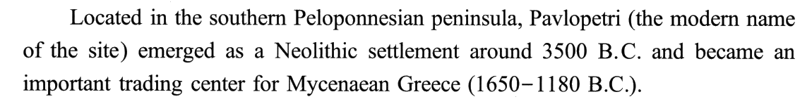
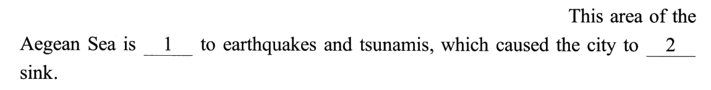
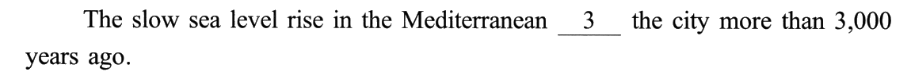
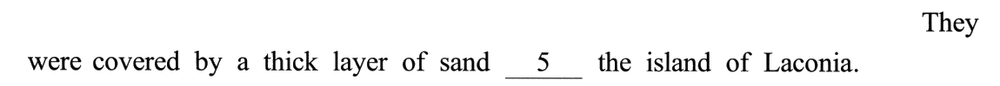
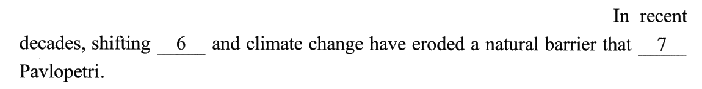
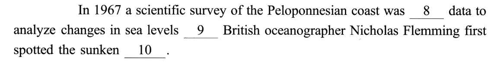
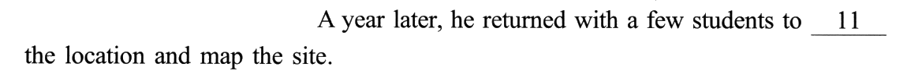
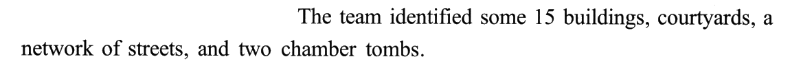
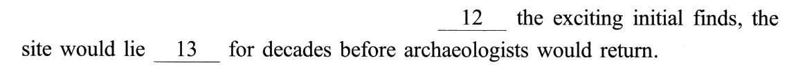
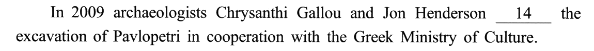
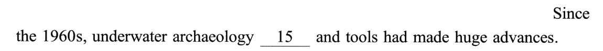
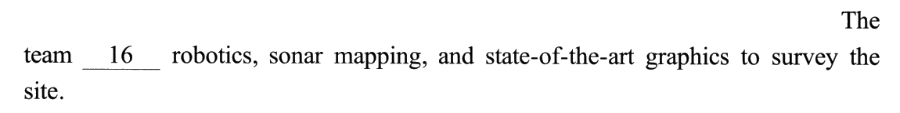
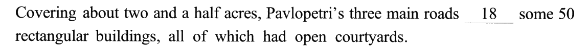
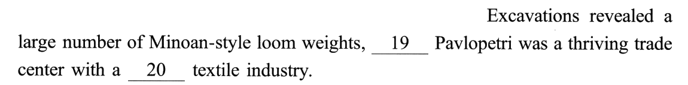
02逐空精解（点选项即判 · 再看解析）
每空 0.5 分。题干只引空格所在的短语，完整句子看 01。本篇是按年份往下讲的发现史，没有作者立场，方向几乎不会反；真正要动脑的是三件事：① 先定这一空在时间轴的哪一站（沉没 · 被看见 · 被晾着 · 被挖出来 · 推出结论）；② 分清「没被看见」和「没被动过」两条线——13、14 都在后一条线上；③ 动词空先问主语能不能做——3、7、8、11、16、18 六个动词空，四个选项都能接给出的宾语，形式一点忙帮不上。
be ___ to 后接名词（earthquakes and tsunamis），不是动词原形。
🔗 线索① 后半句 which caused the city to … sink：地震海啸是城市下沉的原因 ⟹ 这片海域「常遭受」它们；② 地震、海啸都是坏事，而 be prone to 专门接坏事（prone to injury／error）。
✅ B pronebe prone to ＝ 易于遭受（不好的事）——点出这片海域的地质特点，正好接上「导致城市下沉」。
❌ 另外三个错在哪
The slow sea level rise——同一件事（城市被水吞没）下一句说「慢」，本句的空就是「慢慢地」。地质沉降本身也是一个过程，不是一瞬间。
✅ C gradually逐渐下沉——与下句 slow 同义复现。
❌ 另外三个错在哪
They were covered by a thick layer of sand——They 回指本空，能被沙盖住 ⟹ 实体；② 同段 the sunken ___（10）和随后的 15 buildings, courtyards, streets, tombs 说的是同一样东西 ⟹ 遗留下来的建筑实体。
✅ C remains遗迹、遗址（常用复数）——几千年沉在水下无人看见，后被沙覆盖。
❌ 另外三个错在哪
first spotted ⟹ 这片海岸此前没被认真考察过，没有旧数据可恢复、可更新。
✅ A gathering收集数据以分析海平面变化——科考的第一步。
❌ 另外三个错在哪
bring sth to ___ 框架里的名词，在句末。
🔗 线索① 现成习语 bring … to light：使重见天日、揭露出来；② 与②段首的 lay unseen 首尾相反——藏了几千年 → 被带到光亮处；③ 下一句开始列成果（路、房、织机坠子）＝「揭开」的内容。
✅ B lightbring the underwater town to light ＝ 让水下城镇重见天日。
❌ 另外三个错在哪
03考点分类（完形不背单个空，要看「这题在考什么」）
点某一类 → 下方列出该类所有空、正文里同步高亮 → 点小格跳到解析卡。（分类依据不是「空格里填的是什么词」，而是「解这一题你得做什么动作」——1 prone to、5 off the island、17 bring to light 得先认得现成说法，归「固定搭配」；3、7、11、16、18 五个动词空四个选项结构全通，定它们的是「主语能不能对宾语做这件事」，连同 6 currents（先定沙层在海底）、20 robust（同句 thriving 同向），归「词义辨析」；2 要看下一句的 slow、4／10 要认同指链、13 要回到 first spotted、14 要回到上段末的 would return、15 要看下一句的技术清单、8 要用同句的 first 排掉两个预设，归「上下文语义」。）
⭐ 十九年对照：2025 的 7／3／3／7 是新组合——十九年第十六种（重样仍是三次：2016 撞 2011、2020 撞 2014、2024 撞 2018）。逻辑 3 个，与 2012、2014、2015、2017、2020、2022 并列低位（只有 2008、2021 更少）；词义与语境各 7 个、两头重，搭配只有 3 个——这是一篇靠「读懂故事」而不是靠「背短语」的完形。
| 年份 | 词义 | 搭配 | 逻辑 | 语境 | 这一年压在哪 |
|---|---|---|---|---|---|
| 2007 | 9 | 5 | 4 | 2 | 词义（占 45%） |
| 2008 | 9 | 6 | 2 | 3 | 实义动词的主语适配 |
| 2009 | 6 | 5 | 5 | 4 | 四类几乎持平 |
| 2010 | 9 | 4 | 4 | 3 | 形容词与副词的方向 |
| 2011 | 6 | 3 | 6 | 5 | 一根因果箭头的方向 |
| 2012 | 5 | 4 | 3 | 8 | 作者的应然立场 |
| 2013 | 3 | 7 | 4 | 6 | 空格后的介词短语 |
| 2014 | 5 | 6 | 3 | 6 | 按段定正负 |
| 2015 | 6 | 6 | 3 | 5 | 研究报道的槽位套话 |
| 2016 | 6 | 3 | 6 | 5 | 流程时间轴 |
| 2017 | 7 | 4 | 3 | 6 | 因果链的扣环词 |
| 2018 | 5 | 4 | 4 | 7 | 两本账的翻账键 |
| 2019 | 4 | 4 | 4 | 8 | 清单编号 ＋ 替身链 |
| 2020 | 5 | 6 | 3 | 6 | 三声部 ＋ 让步档位 |
| 2021 | 3 | 7 | 2 | 8 | 同句搭档 ＋ 单边搭配 |
| 2022 | 6 | 4 | 3 | 7 | 让步转折信号词 |
| 2023 | 5 | 5 | 6 | 4 | 六种逻辑关系 ＋ 全真搭配 |
| 2024 | 5 | 4 | 4 | 7 | 一个意思说三遍（四组同义复现） |
| 2025 | 7 | 3 | 3 | 7 | 时间轴上的两条线（被看见 vs 被动手） |
⚠️ 口径说明：19 若只把连接词算逻辑空、改归词义，就成了 8／3／2／7；8 若按「gather data 主谓搭配」归词义，就成了 8／3／3／6；6 若按 shifting currents 现成搭配归搭配，就成了 6／4／3／7。三种口径下「逻辑不超过 3、词义与语境两头重」都不变；前两种组合在前十八年同样没出现过，第三种会撞上 2022（6／4／3／7）——所以「新组合」这个说法取的是本页口径。
📌 结构失效：动词空六道全失效。 3 disguised／submerged／relocated／isolated 全能接 the city · 7 四个全能接 Pavlopetri · 8 四个全能接 data · 11 四个全能接 the location · 16 四个全能接 robotics · 18 四个全能接 buildings；另有 13（四个 un- 形容词都能接在 lie 后）、20（四个形容词都能修饰 industry——黄皮书拿「diverse 只接复数」排 B 是错的）。⟹ 救回它们的只有两样：主语能不能对宾语做这件事（3、7、18），和后面的 to do 要什么手段（8、11、16）。
📐 线索位置（判据＝关键线索是否落在同一个句号之内）：句内自足 14 空／跨句 6 空 ＝ 70%。 跨句：2（下句 slow）· 4（下句 They were covered；后文 buildings 清单）· 10（段首 remains）· 13（上文 first spotted、map the site）· 14（上段末 would return）· 15（下句技术清单）。⚠️ 口径：6 若按「要回上句才知道屏障是沙」算跨句，则 13／7＝65%。（往年：2019 60% → 2020 85% → 2021 90% → 2023 85% → 2024 75% → 2025 70%——连续两年下降：叙事文的空，线索常在上一站或下一站。）
📌 位置预判：句首空只有 1 个（12 Despite），它就是逻辑空 ⟹ R76「句首的空几乎一定考逻辑」本年 1／1 成立；另外两个逻辑空 9 when、19 suggesting 都在句中——一个在从句开头、一个在分词开头，都是「从句／状语的门口」。
📌 三缺一：干脆成立 6 次（2 · 6 · 9 · 12 · 14 · 19），全是答案——连续三年都是 6 次。2：accidentally／frequently／temporarily 把下沉当事件 ＋ gradually 唯一当过程 · 6：rivers 陆上、winds 空中、seasons 时间 ＋ currents 唯一在海里 · 9：until／after／once 一前一后 ＋ when 唯一同时 · 12：Unlike／Besides／Among 都不让步 ＋ Despite 唯一让步 · 14：suspended／transferred／canceled 都让发掘不在这儿进行 ＋ resumed 唯一让它继续 · 19：expecting／predicting／recalling 都要人当主语 ＋ suggesting 唯一能让证据当主语。⚠️ 对照：2023 六次里五次是逻辑空、2024 三次是动词空，2025 三次逻辑空、三次实义词（副词、名词、动词各一）——三缺一不挑词性，凡是四个选项能按「方向／极性」分组的空，都先分组（⟹ R74）。
04完形六大打法（本篇取证）
🔁 三年说明文对照：2023 完形 是百科词条，靠关系（六个逻辑空六种关系）；2024 完形 是产品原理，靠复现（四组同义说法）；2025 是发现史，靠时间轴（先定是哪一站，再分两条线）。三年都没有作者立场，方向都不会反——说明文的完形，难点从来不在正负，在「这一空在结构里的位置」。与 2016 完形 对照：那年是婚礼的流程时间轴（一天之内，一步接一步），本年是历史时间轴（几千年，中间断了几十年）——流程轴不会「断档」，历史轴会，13、14 就出在断档处。
05固定搭配 & 熟词僻义（这些是死记就得分的）
0680 个选项词速查（完形的真正词汇量）
完形一篇＝80 个高频词的辨析现场，绿底是正确项。默写模式会糊住中文释义——先自己说出意思，点单个格子可单独揭开。本篇一个短语选项都没有（对照 2024 有 20 个），全是单词——难点转到了词义的细分：13 题四个 un- 形容词（unchallenged／unknown／unorganized／undisturbed）、19 题四个「心理／推断」动词（expecting／suggesting／predicting／recalling）、14 题四个「停／续」动词，值得在这张表里成组过一遍。
07长难句精析（正文蓝色虚线句）
- 句首状语：
Located in the southern Peloponnesian peninsula——过去分词短语，逻辑主语是 Pavlopetri；be located in ＝ 位于（不译「被定位」）。 - 主语 ＋ 同位语：Pavlopetri（the modern name of the site）——括号交代这只是今天给遗址起的名字，古名不详。
- 两个并列谓语：emerged as a Neolithic settlement around 3500 B.C. and became an important trading center for Mycenaean Greece——一个讲「怎么出现的」，一个讲「后来成了什么」；括号里 1650–1180 B.C. 是迈锡尼时期的年代。
- 首尾呼应：本句 an important trading center ↔ ③❻ a thriving trade center——全文最后用考古证据回证了首句的身份。
- 主干：This area of the Aegean Sea is ___ to earthquakes and tsunamis——be prone to ＋ 名词。
- 定语从句：
which caused the city to ___ sink——which 指 earthquakes and tsunamis（逗号后的非限制性从句，补充结果）；cause sth to do。 - 分裂不定式：to ___ sink——副词插在 to 和动词之间；读的时候把副词摘出来，主干是 caused the city to sink。
- 时间状语：In recent decades ＋ 现在完成时 have eroded——「近几十年来一直在侵蚀」，影响延续到现在。
- 并列主语：shifting ___ and climate change——一个自然力 ＋ 一个人类相关的变化，两样一起侵蚀。
- 宾语 ＋ 定从：
a natural barrier that ___ Pavlopetri——that 指 barrier；从句给屏障下定义：它是干什么的。主句「侵蚀」与从句「保护」一坏一好，构成张力。
- 时间状语：In 1967。
- 主句：a scientific survey of the Peloponnesian coast was ___ data——主语是「考察」这件事（物作主语，等于「考察队」）；过去进行时 was ___ing。
- 目的状语：
to analyze changes in sea levels——采数据是为了分析海平面变化；这次考察本来不是来找古城的。 - when 从句：
___ British oceanographer Nicholas Flemming first spotted the sunken ___——一般过去时 ＋ first：正在做 A 时意外撞上 B。
- 让步状语：
___ the exciting initial finds——介词短语，finds 是名词「发现物」。 - 主干：the site would lie ___ for decades——lie ＋ 形容词 ＝ 处于某状态。
- 两个 would：would lie、would return 都是过去将来时——站在 1968 年往后看：「它将沉寂几十年，然后考古学家才会回来」。这是叙事文的「预告」笔法，把下一段（2009）提前埋了钩子。
- 时间状语：From 2009 to 2013——一段时间，配合下文的成果清单。
- 主干：they were able to bring the underwater town to ___——⚠️ were able to 表示过去成功做成了某事（＝ managed to），不能换成 could（could 只说能力）。
- 习语：bring sth to light——宾语 the underwater town 插在 bring 和 to 中间，所以读的时候要把 bring … to light 拼回来。
- 句首状语：
Covering about two and a half acres——「占地约两英亩半」。⚠️ 严格按语法，分词的逻辑主语应是主句主语 three main roads；可语义上占地 2.5 英亩的是整座城（藏在所有格 Pavlopetri’s 里）——新闻英语常见的宽松写法，读懂即可，作文里别学。 - 主干：Pavlopetri’s three main roads ___ some 50 rectangular buildings——some ＋ 数字 ＝ 大约。
- 非限制性定从：
all of which had open courtyards——which 指那 50 座建筑；「代词 ＋ of which」是写作里很好用的结构。
- 主干：Excavations revealed a large number of Minoan-style loom weights——证据。
- 结果状语：
___ (that) Pavlopetri was a thriving trade center——现在分词，逻辑主语是前面整件事（发掘出大量织机坠子）；宾语从句省了 that——结论。 - with 短语：
with a ___ textile industry——补充说明 trade center「带着怎样的产业」，与 thriving 同向。 - 收束：「证据 → 结论」一句写完，回扣首句的 trading center——全文到此闭环。
08可搬进作文/翻译的表达
本篇是一篇按年份讲「一样东西怎么被埋没、又被找回来」的叙事说明文，最能搬的是四类句子：讲原因链（be prone to …, which caused …）、讲沉寂与转机（lay unseen for …／Despite …, X would lie undisturbed …）、讲技术推动（Since …, X had made huge advances · employ X to do Y）、讲证据推结论（…, suggesting that …）。话题上，「文化遗产保护」「科技助力考古」「被遗忘的传统重新走红」都能接上。下面例句全部自拟，只借句式骨架。